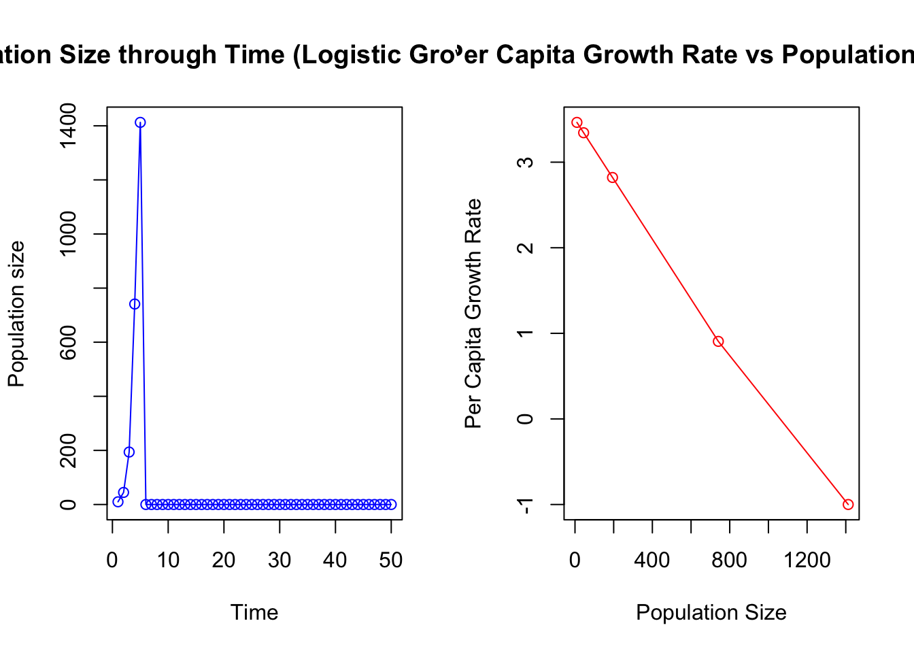

7 Basic logistic population growth
7.1 Background
In nature, populations can’t grow indefinitely. They eventually reach an upper limit, known as the carrying capacity (\(K\)), which represents the maximum number of individuals an environment can support. Factors like available resources, competition, predation, and disease set this limit.
The logistic growth model accounts for this limitation and provides a more realistic picture of population growth. Unlike simpler models, such as exponential growth, that assume unlimited resources, the logistic model reflects how populations slow their growth as they approach the carrying capacity. When the population is small, it can grow quickly, but as it gets closer to the limit, the growth rate slows down. When the population is at carrying capacity the population will not grow (birth rates = death rates).
The model is described by the following equation:
\(N_{t+1} = N_{t} + r_{m} N_{t} \left(1 - \frac{N_{t}}{K}\right)\)
Where:
- \(N_{t+1}\) is the population size at the next time step.
- \(N_t\) is the current population size.
- \(r_m\) is the intrinsic growth rate, or the maximum possible per capita population growth rate.
- \(K\) is the carrying capacity.
In this equation, the term \(\left(1 - \frac{N_t}{K}\right)\) slows population growth as the population size \(N_t\) approaches \(K\). If \(N_t = K\), the population stops growing.
As growth rates increase beyond a certain point, the population can exhibit more complex behaviours. At higher growth rates, populations may overshoot the carrying capacity, leading to oscillations as they fluctuate around it. In some cases, the population may show what’s called deterministic chaos. This means that while the population fluctuates unpredictably, the system itself is not random — small changes in initial conditions or growth rates can lead to vastly different outcomes.
This Excel-based exercise will help you explore how changes in the growth rate and carrying capacity affect population dynamics. Though simple, the logistic model provides valuable insights into how populations stabilize, fluctuate, and respond to environmental limits.
Learning outcomes:
- Increased competence in using Excel formulae for mathematical modeling.
- Understanding the parameters of the logistic population growth model.
- Understanding how strikingly different types of population dynamics can result from the same (logistic) model simply by varying the population growth rate parameter.
- Understanding the concept of deterministic chaos and how it is different from randomness.
- Competence in using mathematical models in Excel to strengthen own understanding of biological processes.
7.2 Worked example
7.3 Your Task
In this exercise, you will explore how changes in key parameters affect population dynamics using the logistic growth model. Follow the steps below to guide your analysis.
Download the Excel File
Download and open the Excel file:Basic Logistic Growth.xlsx.Familiarise Yourself with the Spreadsheet
In the file, you’ll see three sections:- Pink Block: This is where you will input and adjust the model parameters.
- Graphs: These display how the population behaves over time and in relation to the parameters you adjust.
Understand the Parameters
In the pink block, you will find the key parameters of the logistic growth model:Initial N: The starting population size at time 1 (default = 10).r_m: The maximum per capita population growth rate (default = 0.8).- If \(r_m > 0\), the population grows.
- If \(r_m < 0\), the population shrinks.
- The population size cannot fall below zero.
K: The carrying capacity of the population (default = 200).
Explore the Model
Use the following steps to guide your exploration of population dynamics:
7.3.1 Graph 1: Population Size Through Time
Step 1: Examine the default settings in Graph 1, where
Initial N= 10,r_m= 0.8, andK= 200.What is the maximum population size in relation to the carrying capacity?
At what time does the population reach its maximum size?
Step 2: Increase the carrying capacity (
K) to 300.
Prediction: What do you expect to happen to the population size over time?Test: How does increasing
Kaffect the maximum population size and the time taken to reach it?Step 3: Halve the growth rate (
r_m) to 0.4.
Prediction: How will this change affect the population’s growth and the time it takes to reach the maximum population size?
Test: What do you observe in the graph?
Step 4: Increase
r_mto 1.8.How does the population size change over time?
How does the maximum population size compare to the carrying capacity?
How would you describe the dynamics of this population (e.g., overshoot, oscillations)?
Step 5: Experiment with higher values for
r_m(e.g., 2.0, 2.8, 2.9, 3.0).How do the population dynamics change as
r_mincreases?What happens when
r_mis 2.8 or 3.01? Are the dynamics predictable or chaotic?
Step 6: Compare the population trajectory for populations with
r_m= 2.8 andr_m= 2.81, and then fixr_mat 2.8 but vary the initial population size by a small amount.How sensitive are these populations to small changes in
r_mor the initial population size?Would these populations be easy or hard to predict?
What kinds of species have high population growth rates like this? How might this relate to managing pest species or diseases?
7.3.2 Graph 2: Per Capita Growth Rate vs. Population Size
- Step 1: Examine Graph 2 with the default settings (
Initial N= 10,r_m= 0.8,K= 200).How does the per capita growth rate change as the population size increases?
Where does the per capita growth rate cross the x-axis (population size)?
- Step 2: Modify the carrying capacity (
K) to 300 and observe the changes in Graph 2.How does increasing the carrying capacity affect where the per capita growth rate crosses the x-axis?
Does the slope of the per capita growth rate change when you alter
K?
- Step 3: Change
r_mto 1.8 and observe how the graph is affected.How does increasing
r_maffect the shape of the curve?Does the intercept on the x-axis change when you increase
r_m?
- Step 4: Experiment with different values for
Kandr_m.How do changes in
Kandr_mtogether affect the graph?
7.4 Takeaways
Logistic growth captures density dependence through the carrying capacity \(K\).
High growth rates can cause overshoot, oscillations, or chaos in discrete-time models.
Per-capita growth declines linearly with population size in the logistic model.
What would the per capita growth rate look like for a population experiencing exponential growth instead of logistic growth?
These steps help you visualise how population size and per capita growth rate are interrelated, reinforcing the concepts behind logistic population growth.
These two graphs are different ways to visualize the same model.
It is important that you can make the connections between these graphs.
How would the same plots look for regular exponential growth?
Some useful keywords:
- Oscillation
- Damped oscillation
- Cycle/cyclic dynamics
- Stable-limit cycle (2-point, 3-point limit cycle)
- Chaos/Chaotic dynamics
- Unpredictable/predictable
7.5 Questions
In the logistic growth model, what happens to the population growth rate as the population size approaches the carrying capacity (\(K\))? How does this lead to population stability?
In the logistic growth model, what factors can cause a population to overshoot its carrying capacity temporarily? How does the population respond to such overshooting?
How can a ballpark knowledge of maximum per capita population growth rate (\(r_m\)) be useful to a population manager?
What are the key assumptions of the logistic growth model, and how might these assumptions limit its real-world application?
7.6 Optional: Do this in R.
You can implement this model in R as follows. In this code, I have added a line which ensures that population size cannot be negative.
# Parameters
r_m <- 3.5 # intrinsic growth rate
K <- 1000 # carrying capacity
N0 <- 10 # initial population size
timesteps <- 50 # number of time steps
# Initialize population vector
population <- numeric(timesteps)
population[1] <- N0
# Initialize per capita growth rate vector
# Length of one less than population, as it's based on changes
per_capita_growth <- numeric(timesteps - 1)
# Loop to calculate population at each time step
for (t in 2:timesteps) {
# Logistic growth model equation
population[t] <- population[t-1] +
(r_m * population[t-1]) * (1 - (population[t-1] / K))
# Ensure population doesn't go negative
if (population[t] < 0) {
population[t] <- 0
}
# Calculate per capita growth rate for the previous time step
per_capita_growth[t-1] <- (population[t] -
population[t-1]) / population[t-1]
}
par(mfrow=c(1,2))
# Plot 1: Population size through time
plot(1:timesteps, population, type = "o", col = "blue",
xlab = "Time", ylab = "Population size",
main = "Population Size through Time (Logistic Growth Model)")
# Plot 2: Per capita growth rate vs population size
plot(population[1:(timesteps-1)], per_capita_growth,
type = "o", col = "red",
xlab = "Population Size",
ylab = "Per Capita Growth Rate",
main = "Per Capita Growth Rate vs Population Size")
The behaviour where
r_mvalues above 3 cause the population to become very negative, is a mathematical artefact caused by numerical instability in the discrete-time logistic growth model. When the growth rate is too high, the population can overshoot its carrying capacity, and the formula’s negative feedback term can drive the population to unrealistic, negative values. This issue arises because the model doesn’t impose biological constraints, such as preventing population sizes from falling below zero. In real biological systems, such negative values would not occur.↩︎